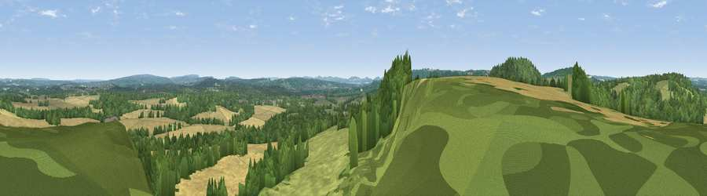

Viewpoint near Empshott
#24491 in England · top 23% of its area beats it · near Empshott · path 119 mWhere it is
The exact computed spot (SU 76425 32025). Click the marker for map links.
Public access: the nearest public right of way is about 119 m away — the final stretch may cross private land. Computed from Natural England's CRoW access layer and OpenStreetMap rights of way — not the legal definitive map. Always verify locally.
The view, rendered

A 360° render of this exact spot computed from the terrain model, tree cover and land cover — summer colours, afternoon light, calibrated against photographs of famous viewpoints. Real trees, hedges and buildings will differ in detail.
The panorama
Grey silhouette: terrain skyline in each direction (720 bearings, Earth curvature and refraction included). Dashed green: skyline with trees (+15 m) and buildings (+8 m) as obstacles. Blue strip: how far the ground is visible on each bearing.
Where the view opens
Wedge length = distance to the farthest visible ground on that bearing (vegetation-aware). Rings at 10, 25 and 50 km.
What fills the view
41% woodland · 32% cropland · 26% grassland ·
Angular shares of the visible panorama (visual magnitude), not map area. Landscape diversity 0.49 (0–1 Shannon).
Key numbers
More beautiful places nearby
The staircase of upgrades: each row has a higher view potential than everything closer. Driving times are estimates from straight-line distance, calibrated against real road routing — check an actual route before setting out.
| Place | Direction | Drive | Score |
|---|---|---|---|
| Noar Hill | W · 2 km | ~4 min | 59.8 |
| Viewpoint near Steep | SSW · 5 km | ~11 min | 68.7 |
| Viewpoint near Buriton | SSW · 12 km | ~23 min | 75.3 |
| Viewpoint near Buriton | SSW · 13 km | ~23 min | 80.0 |
| Beacon Hill | SSE · 14 km | ~26 min | 85.8 |
| Chanctonbury Ring | ESE · 42 km | ~62 min | 87.0 |
| Viewpoint near St. Lawrence | SSW · 59 km | ~81 min | 88.2 |
| Viewpoint near Niton | SSW · 62 km | ~85 min | 89.2 |
51.08246, -0.91031 · source: screening · position refined by local search. Computed location — check access rights before visiting.